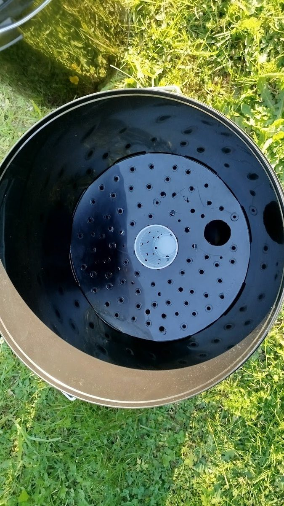
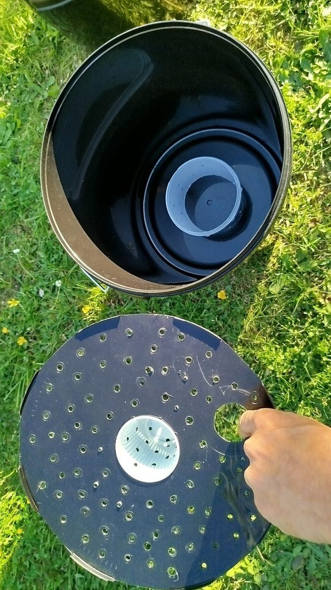

Zwei Bauvarianten ohne 3D-Drucker: die robuste Doppeleimer-Methode oder der Eigenbau aus dem Eimer-Deckel. Beide nutzen das gleiche Wickdocht-Prinzip — ein perforierter Becher mit komprimiertem Substrat zieht das Wasser aus dem Reservoir nach oben.
Paprika im Doppeleimer-Eigenbau (DIY) Growtainer
01 / Das Wickdocht-Prinzip
Wie das Wasser in das Substrat steigt.
Das Herz jedes Growtainers ist der Wickdocht-Becher: ein perforierter Plastikbecher (z. B. ein zugeschnittener Joghurtbecher oder kleiner Pflanztopf), der mittig im Erdrost sitzt und in das Wasserreservoir hineinragt.
Befüllt wird der Becher mit festgedrücktem Substrat. Diese Verdichtung erhöht die Kapillarwirkung — das Substrat im Becher saugt Wasser aus dem Reservoir und gibt es per Diffusion an das umgebende, lockerere Substrat im Hauptraum ab.
Kein zusätzliches Wickdocht-Material nötig. Filz, Geotextil oder Schnüre wie bei manchen DIY-SIP-Anleitungen sind beim Growtainer überflüssig — das Substrat selbst ist der Docht. Wichtig: nur im Becher fest andrücken, im Hauptraum locker einfüllen.
02 / Variante A — Doppeleimer
Die robuste Standard-Lösung.
Zwei stapelbare Lebensmitteleimer: der untere bildet das Reservoir, der obere mit perforiertem Boden trägt das Substrat. Robust, schnell gebaut, langlebig.
Zeitraffer-Video: Aufbau und Bepflanzung
Das Zeitraffer zeigt die Zusammensetzung und Bepflanzung eines 2-Eimer-Eigenbau-Growtainers. Gut sichtbar: der perforierte Boden des weißen Eimers (Einsatz, ca. 5 Liter weniger Volumen aber gleicher Durchmesser wie schwarzer Außeneimer, stapelbar). Weiterhin gut sichtbar: der perforierte Becher und das Gießrohr sind bereits eingesetzt. Das Substrat wird in den Becher durch Andrücken komprimiert, damit es an dieser Stelle das Wasser gut ansaugen kann.
Anmerkung zum Video: Im Video wird das Dolomit-Gesteinsmehl als mittlere Schicht unter der Pflanze eingebracht, wie es klassisch üblich war für SIPs. Es hat sich herausgestellt, dass die Aufnahme der Mineralien jedoch besser ist, wenn das Mehl in den oberen Zentimetern des Substrats untergemischt wird, sodass es näher an den Zersetzungsprozessen des Düngers ist. Aktuelle Empfehlung: Dolomit in die obersten 5–8 cm einarbeiten.
Bauschritte Variante A
Schritt 1Eimer und Material besorgen
Zwei stabile, stapelbare Lebensmitteleimer (15–20 L), gleicher Typ. Innerer Eimer hat ca. 5 Liter weniger Volumen, gleicher Außendurchmesser. Bei Bäckereien, Großmärkten oder im Gastrobedarf gegen kleines Pfand.
Schritt 2Inneren Eimer perforieren
Im oberen Eimer (Substrat-Träger) den Boden perforieren. In der Mitte ein größeres Loch (Ø ~6–8 cm) für den Wickdocht-Becher aussägen. Ringsum viele kleine Belüftungslöcher (Ø 3 mm) im Abstand von ~3 cm.
Bohrgröße 3 mm: reicht aus für Belüftung und Wasserkommunikation. Größer ist nicht besser — nur Mücken kommen leichter durch und Substrat rieselt schneller in das Reservoir.
Schritt 3Wickdocht-Becher und Gießrohr einsetzen
Einen perforierten Plastikbecher (zugeschnittener Joghurtbecher, kleiner Pflanztopf, oder mit Lötkolben perforierter Becher) in das Mittelloch klemmen — er muss in das Reservoir hineinragen.
Direkt daneben ein Loch für das Gießrohr (PVC-Rohr oder zugeschnittene Plastikflasche, Ø ~30 mm) — durchstecken bis ins Reservoir, oben ≥ 5 cm über die spätere Substrat-Oberkante hinaus.
Schritt 4Überlauf-Bohrungen am unteren Eimer
Im unteren Eimer (Reservoir) zwei bis drei 3-mm-Bohrungen als Überlauf, alle auf gleicher Höhe rundum. Die Unterkante der Bohrungen muss 5 mm unterhalb des Bodens des oberen Eimers liegen — so bleibt das Substrat selbst bei leicht schiefem Stand trocken.
Reservoir-Tiefe: typisch 5–8 cm zwischen den beiden Eimerböden. Ergibt im 20-L-Eimer ~2–3 Liter Wasservorrat — gut für 3–5 Tage je nach Pflanze und Wetter.
Schritt 5Substrat einfüllen
Eimer stapeln (oberer in unteren). Substrat einfüllen — siehe Substrat-Theorie.
Reihenfolge wichtig: zuerst den Wickdocht-Becher mit Substrat befüllen und festdrücken, dann den Hauptraum drumherum locker auffüllen, ohne zu stampfen.
Mineral-Booster wie Basalt-Urgesteinsmehl beim Mischen direkt einbringen. Dolomit-Gesteinsmehl in den obersten 5–8 cm einarbeiten — dort wirkt die natürliche Säurewirkung der Wurzelausscheidungen am stärksten und löst den Dolomit langsam an.
Schritt 6Düngerstreifen und Folie
Auf das Substrat zwei parallele Bio-Volldünger-Streifen aufbringen — links und rechts der späteren Pflanzstelle. Mengen siehe Substrat-Rechner. Dünger nicht ins Substrat einmischen — nur als Streifen auflegen, mit Folie abdecken.
Folie (PE oder zugeschnittener Müllbeutel) über das Substrat legen, mit Spannschnur oder Gummiband am Eimerrand befestigen. Gießrohr durch ein passendes Loch in der Folie führen.
Schritt 7Reservoir füllen, pflanzen, Pflanzloch X einschneiden
Wasser durch das Gießrohr einfüllen, bis es aus den Überlauf-Bohrungen läuft.
An der Pflanzstelle (mittig oder leicht versetzt) ein kreuzweises X mit dem Cuttermesser einschneiden — etwa 8 cm Schnittlänge. Pflanze (Tomate, Paprika, Gurke aus dem Bio-Gartencenter) durchsetzen, Wurzelballen eindrücken, Folien-Klappen um den Stamm zurücklegen.
Standort: Die ersten Tage hell, aber nicht prallsonnig. Die Pflanze muss erst Wasser-Saugverbindung zum Reservoir aufbauen. Nach 3–5 Tagen voll in die Sonne.
03 / Variante B — Eigenbau aus dem Eimer-Deckel
Wenn nur ein Eimer verfügbar ist.
Wer keinen zweiten passenden Stapeleimer findet, kann den Deckel des Haupteimers als Erdrost umfunktionieren. Spart einen Eimer und nutzt vorhandene Materialien — mit etwas mehr Bastelarbeit.

Draufsicht: Deckel-Erdrost im Eimer mit Wickdocht-Becher und Gießrohr-Öffnung

Deckel-Erdrost separat. Im Eimer: Stützring aus zugeschnittenem Pflanztopf-Rand
Was anders ist als bei Variante A
Anstelle eines zweiten Eimers wird der Deckel des Eimers als Erdrost präpariert: Belüftungslöcher (3 mm) rundum, ein größeres Loch in der Mitte für den Wickdocht-Becher, ein zweites Loch fürs Gießrohr. Belüftung per Lötkolben oder Bohrer.
Der Deckel braucht eine Auflage im Eimer, damit er auf Reservoir-Höhe sitzt — typisch ein zugeschnittener Rand eines stabilen Plastik-Pflanztopfes, der als Stützring rundum eingelegt wird.
Stabilitäts-Herausforderung: Mit einem einzelnen Stützring kann der Deckel-Erdrost unter dem Gewicht eines voll bewachsenen Substrats über die Saison nachgeben oder sich verziehen. Lösungen:
Rand des Deckels seitlich an die Eimerwand fixieren — Draht, Schrauben oder Nieten etc.
Mehrere Stützringe konzentrisch (ineinander) verschachteln oder nebeneinander platzieren
Die langfristige Stabilität gegen den Druck einer wachsenden Pflanze über die ganze Saison ist eine Design-Herausforderung — deswegen sind die druckbaren Designs die robusteste Variante.
Ansonsten gelten alle Schritte von Variante A: Wickdocht-Becher mit komprimiertem Substrat, Gießrohr, Überlauf-Bohrungen 3 mm an der richtigen Höhe, Mineral-Booster, Düngerstreifen, Folie.
Original-Anleitung
Die ursprüngliche DIY-Anleitung von 2009 (mit alten Skizzen) als SlideShare-Präsentation verfügbar. Wird perspektivisch ins Repo überführt und aktualisiert.
04 / Pflege während der Saison
Was während der Wachstumsphase zu tun ist.
Wasser nachfüllen
Alle 3–7 Tage je nach Wetter und Pflanzengröße. Durchs Gießrohr nachfüllen, bis es sichtbar aus den Überlauf-Bohrungen läuft. Nicht von oben gießen — sonst schemmt das Wasser ggf den Dünger und das Dolomit nach unten, was das SIP Prinzip untergräbt.
Bei großer Hitze und in voller Produktion kann eine große Tomate auch tägliches Auffüllen brauchen.
Düngerstreifen erneuern
Bei robustem Wachstum reicht der Initial-Düngerstreifen für die ganze Saison. Wenn die Pflanze gegen Hochsommer schwächelt: Folie kurz öffnen, alten Streifen-Rest wegkehren, neuen frischen Streifen aufbringen, Folie wieder schließen.
Optional: Gießwasser-Boost
Alle 2–3 Wochen kann das Gießwasser angereichert werden:
Fulvinsäure (5–10 ml/10 L) oder Wurmkompost-Tee — natürliche Chelatbildner für bessere Mineralaufnahme
Saisonende
Im Herbst bzw. nach der letzten Ernte: Pflanzenwurzeln vorsichtig vom Erdrost trennen, Substrat und Wurzeln kompostieren, die Teile reinigen und lichtgeschützt einlagern.
Über Winter: Eimer leeren oder zumindest Wasser ablassen — sonst kann gefrierendes Wasser den Eimer sprengen.
05 / Häufige Probleme
Wenn etwas nicht stimmt.
Wasser steigt nicht ins Substrat
Wahrscheinliche Ursache: Substrat im Wickdocht-Becher bzw. am übergang von becher zu Substrat nicht fest genug komprimiert. Lösung: Substrat vorsichtig von oben einmal vorsichtig durchfeuchten, damit der Kapillarzug startet, ggf. vorsichtig mit einem staf (an den Pflanzenwurzeln vorbei die Komprimierung des Substrats auch über dem Kapilarbecher erhöhen (evtl. Trennschicht brechen).
Substrat ist nass bis oben
Überlauf-Bohrungen sitzen zu hoch — Wasserstand reicht bis ans Substrat. Bohrungen tiefer setzen oder mehr Bohrungen anlegen, damit Wasser schneller abläuft, dabei kontrollieren, ob ein Eigenbau-Erdrost nicht mglw. an einer Seite kollabiert ist / nachgegeben hat.
Pflanze wächst, aber Blätter werden gelb
Klassischer Stickstoff- oder Eisenmangel — Düngerstreifen ist verbraucht oder zu dünn. Streifen erneuern. Bei Eisenmangel zusätzlich Schachtelhalm-Tee oder Fulvinsäure ins Gießwasser.
06 / Nächste Schritte
Was als Nächstes lohnt.
Substrat-Rezepte
Drei Mix-Varianten und die Theorie hinter der Mineral-Optimierung.